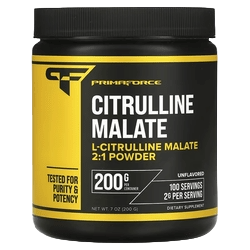

OUR PRODUCTS:

Our Price: JOD 45$
Descreption:
- Optimum Nutrition, Gold Standard 100% Whey Protein Powder, 24 g Protein Powder with Naturally Occurring BCAAs, Double Rich Chocolate, 2 lb, 29 Servings.
- Gold Standard High Protein Blend: Support lean muscle mass with 24 g blended protein consists of whey protein isolate, whey protein concentrate, and whey peptides.
- Includes Naturally Occurring BCAAs: With over 5 g of naturally occurring BCAAs per serving, this protein powder helps build lean and strong muscles.
- Instantized Isolate Protein Powder: You can easily stir this protein drink mix with a spoon because Gold Standard Whey is instantized for quick dissolving.
- Healthy Protein Powder Drink Mix: Each serving of this gluten-free whey protein powder has only 3-4 g carbs, 1-3 g sugar, and 1-1.5 g fat.
- Banned Substance Tested: This protein powder has high quality control measures so you feel comfortable and safe consuming the product.
Suggested use:
1 Scoop

Our Price: JOD 12.2$
Descreption:
- Strong healthy bones
- Plus 250 IU Vitamin D
- Fortified with Vitamin D to Help Improve Calcium Absorption
- Helps Build and Support Strong Bones
- Supports Muscle Health
- Science-Backed Quality Since 1969
Calcium Citrate & Vitamin D from Swanson Health Products offers economical bone nourishment in one convenient formula. Recommended by doctors and nutritionists for promoting strong bones, this special formula combines an easy-to-assimilate form of calcium with a generous supply of vitamin D to promote absorption even further.
Suggested use:
As a dietary supplement, take two tablets two times per day with water.
warnings:
For adults only. Consult your healthcare provider before using this or any product if you are pregnant or nursing, taking medication or have a medical condition. Keep out of reach of children. Do not use if seal is broken. Store in a cool, dry place.
Our Price: JOD 6$
Descreption:
- Trust Quality
- Since 1932
- Dietary Supplement
- 3 Daily
- Strong Bone Support
- Gluten Free
KAL® Calcium Citrate provides a high potency of calcium per serving. Calcium is intended to provide nutritive support for healthy bones and teeth. ActivTab® technology guarantees tablet disintegration within 30 minutes according to USP standards.
Suggested use:
Take 3 tablets daily with a meal or glass of water. Use only as directed.
warnings:
Do not use if safety seal is broken or missing. Keep out of reach of children. Keep your licensed health care practitioner informed when using this product. Store in a cool, dry place.

Our Price: JOD 10$
Descreption:
- Synergistic Nutrients
- Supports Nerve, Muscle Function and Bone Health
- Non-GMO
- Gluten Free
- Dietary Supplement
- Bone & Joint
- Easy Solv®
Magnesium Optimizer® is a synergistic combination of nutrients to support optimizing magnesium status. Magnesium supports nerve, muscle function, and bone health. Magnesium can be utilized by physically active Individuals to support exercise and endurance activities. Taurine, a free-form amino acid antioxidant, is a cell membrane stabilizer. Taurine supports magnesium status and aids in osmoregulation. Pyridoxal 5-Phosphate (P-5-P) is the coenzyme form of vitamin B6 and supports the metabolism of proteins and amino acids. Magnesium and vitamin B6 are cofactors in multiple enzyme systems in the body. Together, magnesium and vitamin B6 support cellular energy production Including the synthesis of ATP, the universal energy molecule.
Suggested use:
Adults take 2 tablets 1-2 times a day with meals or as directed by your qualified healthcare professional.
warnings:
Consult a healthcare professional before using this product if you are pregnant, nursing, under the age of 18, are taking medication or have a medical condition; if adverse reactions occur, discontinue use. Keep out of the reach of children. Store in a cool, dry place. Do not use if safety seal is damaged or missing.

Our Price: JOD 27$
Descreption:
- Diet
- Energy
- Metabolism
- Acai Berry
- Garcinia Cambogia
- Inulin Fiber
- Vitamin Infused
- No Artificial Flavors
- Dietitian Formulated
- Enjoy Hot or Cold!
Kickstart your metabolism with the best-tasting oolong tea infused with fiber and acai berries. This refreshing tea comes in instant sticks for convenience, without sacrificing flavor and benefits.
Suggested use:
Pour 1 full packet into 8 oz of hot or cold water and stir until completely dissolved (about 10 seconds). This superfood stick can be enjoyed hot or cold. Pour, stir, sip - that's it!
Our Price: JOD 3$
Descreption:
- Sweet and Spicy Blend To Support Overall Health
- Herbal Supplement
- Non GMO Project Verified
- USDA Organic
- Vegan
- Certified B Corporation
- Halal
- Certified Organic by QAI, Inc.
Support Overall Health with Honey Chai Turmeric Vitality This intriguing chai blend begins with Turmeric, traditionally used in Ayurveda for its abundant health promoting qualities. To this we add sweet Honey flavor, and warming spices Cinnamon, Cardamom, Ginger and Clove, to deliver a rich sweet and spicy chai flavor. Enjoy Honey Chai Turmeric Vitality throughout the day to support your overall health and well-being. At Yogi, it's about more than creating deliciously purposeful teas. Yogi Principles We blend with intention. Our flavorful teas are created to support body and mind. We believe in the synergistic benefit of herbs, combining ingredients to enhance their wellness-supporting potential. We blend the best of what nature has to offer using the finest spices and botanicals from around the globe.
Suggested use:
Bring water to boiling and steep 7 minutes. For a stronger tea, use 2 tea bags. Add your favorite sweetener and milk or milk substitute.
warnings:
Consult your healthcare provider prior to use if you are pregnant or nursing.

Our Price: JOD 21$
Descreption:
- Triple Strength▲
- 1,250 mg Fish Oil | 1,040 mg Omega-3
- Supports Brain & Heart Health
- Gluten Free | NON-GMO | Wild Caught
- Dietary Supplement
- Igen Non-GMO Tested
- Third Party Tested
- cGMP Certified
- Certified Sustainable Seafood MSC
Omega-3 is a type of fatty acid that's essential for your body to function properly. Omega-3 Fish Oil is great for heart, brain and immune health. And while there may be plenty of fish in the sea, not all are created equal. The Triple Strength Omega-3 Fish Oil from Sports Research® is sourced from Wild Alaska Pollock and utilizes a 10-step refinement process to deliver an ultra-concentrated dose without the typical fishy aftertaste. ▲Triple Strength Omega-3 (in Triglyceride Form [TG as rTG]) when compared to standard fish oil softgels with only 10-30% Omega-3 content.
Suggested use:
Adults take 1 softgel daily with food, or as recommended by a qualified healthcare professional.
warnings:
Keep out of reach of children and pets. Consult with a qualified healthcare professional prior to using this product, especially if you are pregnant, nursing, have a diagnosed medical condition, are taking a prescription medications (e.g. blood thinners), or are planning a surgical procedure. Do not exceed recommended daily intake. Do not use if safety seal is damaged or missing. Store at room temperature, in a dry place. Protect product from excessive heat, freezing, humidity and light.

Our Price: JOD 12$
Descreption:
- Tested for Purity and Potency
- L-Citrulline Malate 2:1 Powder
- 200 g Per Container
- 100 Servings - 2 g Per Serving
- Dietary Supplement
Primaforce Citrulline Malate, lab tested for potency and purity, has been clinically shown to support increased performance and lean mass gains, support increased blood flow and amino acid delivery to skeletal muscle, leading to increased protein synthesis (muscle growth), enhance ATP production and support cell volumization, and is a potent precursor to arginine.
Suggested use:
As a dietary supplement, mix 1 scoop daily with 6-10 oz of water or as directed by your healthcare professional.
warnings:
For healthy individuals 18 years and older. Consult a healthcare professional prior to use if you are pregnant or nursing, taking medication, or have a medical condition. Keep out of reach of children. Do not use if safety seal is broken or missing. Store in a cool, dry place.

Our Price: JOD 14$
Descreption:
- Made with MenaQ7® - Vitamin K2 as MK-7
- Dietary Supplement
- Non GMO Project Verified
- Certified Vegan
- Gluten Free
- cGMP Compliant
- 3rd Party Quality Tested
- Formulated with Coconut Oil
SR® Vitamin K2 featuring MenaQ7 is a premium, Non-GMO form of Vitamin K2 (MK-7 as Menaquinone-7). Derived from chickpeas via a proprietary fermentation process, SR® Vitamin K2 is combined with Virgin Coconut Oil in a Vegan Certified PlantGel™ Capsule.
Suggested use:
As a dietary supplement, healthy adults take 1 Liquid Veggie Softgel daily with food. Best when taken as directed by a qualified healthcare professional.
warnings:
Keep out of reach of children and pets. Consult with a qualified healthcare professional prior to using this product, especially if you are pregnant, nursing, have diagnosed medical conditions, or are taking prescription medications (e.g., Anticoagulants (Coumadin/Warfarin)). Do not exceed recommended daily intake. Do not use if safety seal is damaged or missing. Store at room temperature, in a dry place. Protect product from excessive heat, freezing, humidity and light. Contains coconut oil: Capsules may appear "cloudy" due to coconut oil's unique semi-solid state at room temperature.
Our Price: JOD 5$
Descreption:
- Sweeter Than Sugar
- No Artificial Ingredients
- Equals 150 Teaspoons of Sugar
- USDA Organic
- Non GMO Project Verified
- This Product is Keto Certified
- Certified Organic by: Quality Assurance International
- Gluten Free
- Naturally Vegan
- Halal
- No Glycemic Impact
- Equals 150 Teaspoons of Sugar
- Keto Certified, 0 g Net Carbs
- Delicious in Coffee, Tea, Smoothies and Cereal
Suggested use:
Each packet = Sweetness of 2 teaspoons of sugar